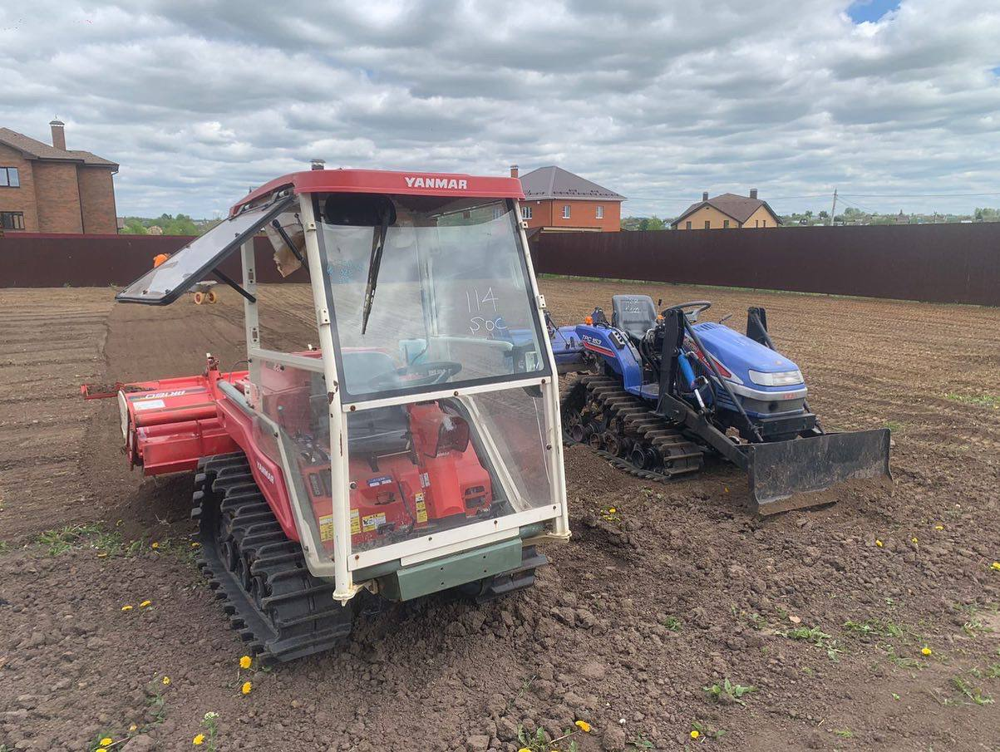
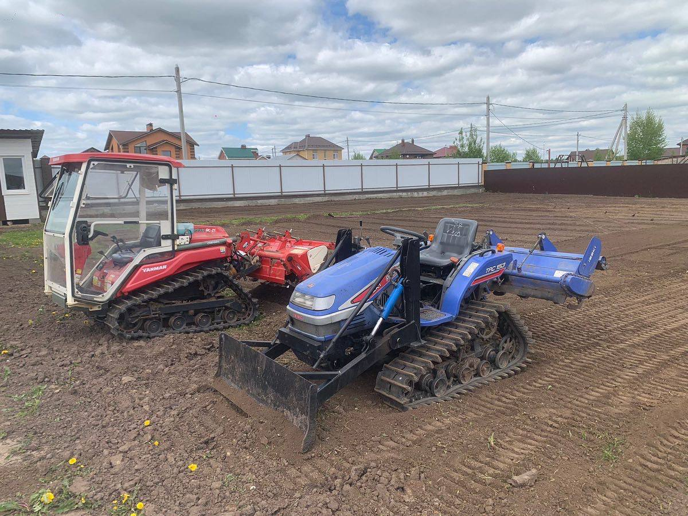

О нас
Мы рады приветствовать Вас на нашем официальном сайте!
oblogorodka71 уже 5 лет осуществляет посев газона под ключ, предоставляет услуги по вспашке земельного участка, культивации земли, фрезеровке, разработке целины. Работаем на японском гусеничном тракторе. Благодаря успешной практике беремся за выполнение заказов разной сложности и срочности. К каждому заказу подход индивидуален.
Для расчета стоимости работ на Вашем участке обращайтесь по телефону
oblogorodka71 уже 5 лет осуществляет посев газона под ключ, предоставляет услуги по вспашке земельного участка, культивации земли, фрезеровке, разработке целины. Работаем на японском гусеничном тракторе. Благодаря успешной практике беремся за выполнение заказов разной сложности и срочности. К каждому заказу подход индивидуален.
Для расчета стоимости работ на Вашем участке обращайтесь по телефону
Техника
А вот и наши главные помощники. Минитрактор Yanmar AC 21 и Iseki TPC 183. Данная техника помогает выполнять нам самые трудные виды работы по подготовке участка под посев, вспашке и фрезеровке в самые короткие сроки. Теперь немного о каждом.

Минитрактор Yanmar помогает подготовить неровный, ухабистый участок к посеву газона. Он отлично справляется с выравниванием территории и даже вспашкой.

Iseki является нашим основным "пахарем". С помощью него мы выполняем работы по вспашке и фрезеровке почвы.
Весь сезон эти помощники помогают нам радовать Вас - наших клиентов.